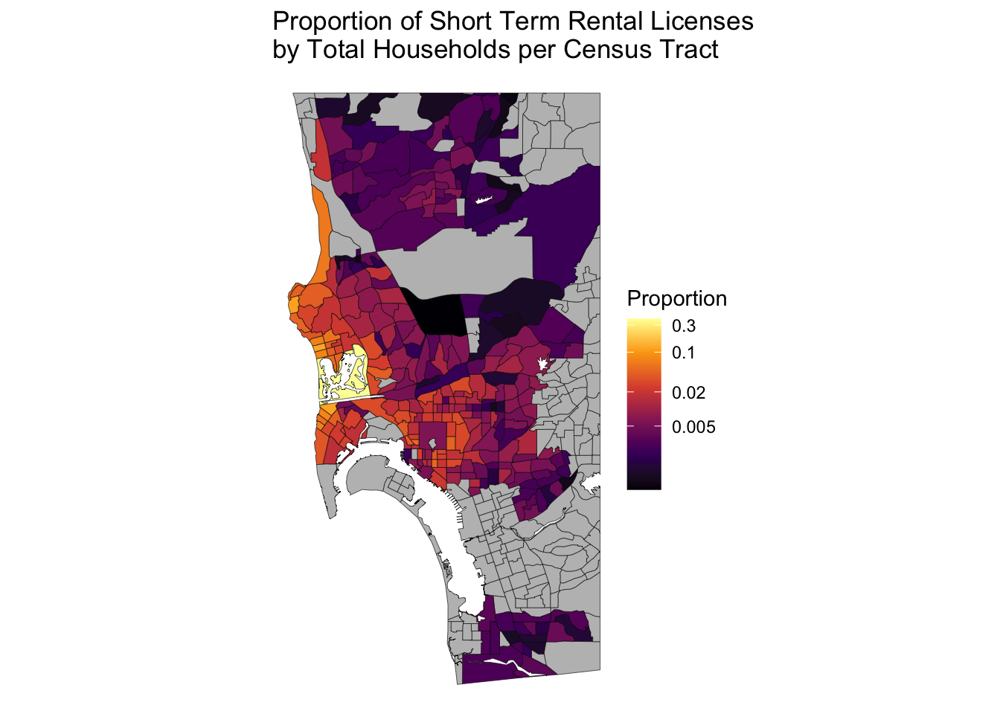

# Packages and Global Options
library(dplyr)
library(ggplot2)
library(purrr)
library(tidycensus)
library(sf)
library(tigris)A few days ago on the r/SanDiegan subreddit someone posted a link to new data from the City of San Diego on Short-Term Residential Occupancy (STRO) licenses. These data show the addresses and owners of every licensed Airbnb (and other similar arrangements, I guess) in the city. Airbnb’s are a soure of ire among some San Diego residents for supposedly wasting our precious housing supply. My view is that this issue is a bit of a red-herring. Housing in California cities like San Diego is so catastrophically under-supplied due to years of restrictive zoning laws that, even if Airbnbs were all made illegal tomorrow, it wouldn’t make much of a difference.
In this post I’m going to walk through how to make some maps with this STRO data using R. I posted one these maps to Reddit but made an embarrassing error which resulted in the incorrect magnitudes being displayed. Always double check your work!
Working with the STRO data
My goal is to create a choropleth map of San Diego with regions shaded according to their proportion of STROs. The packages {dplyr} and {ggplot2} are for some light data manipulation and producing the graphs. Inspired by Michael DeCrescenzo’s posts on functional programming in R, I use {purrr} for some currying and composition later in this post. {tidycensus} is the best way to access US Census data in my opinion. And {sf} and {tigris} are my two favorite GIS packages in R.
Now let’s take a look at the data.
stro <- readr::read_csv("https://seshat.datasd.org/stro_licenses/stro_licenses_datasd.csv")
stro# A tibble: 7,816 × 23
license_id address street_number street_number_fraction street_direction
<chr> <chr> <dbl> <chr> <chr>
1 STR-00001L 3119 Keats … 3119 <NA> <NA>
2 STR-00008L 2026 BALBOA… 2026 <NA> <NA>
3 STR-00012L 4922 Lamont… 4922 <NA> <NA>
4 STR-00014L 412 Los Ala… 412 <NA> <NA>
5 STR-00017L 3353 Fox Pl… 3353 <NA> <NA>
6 STR-00026L 2525 E St, … 2525 <NA> <NA>
7 STR-00035L 3670 KEATIN… 3670 <NA> <NA>
8 STR-00037L 6300 Scimit… 6300 <NA> <NA>
9 STR-00046L 4039 Lamont… 4039 <NA> <NA>
10 STR-00049L 4445 Narrag… 4445 <NA> <NA>
# ℹ 7,806 more rows
# ℹ 18 more variables: street_name <chr>, street_type <chr>, unit_type <chr>,
# unit_number <chr>, city <chr>, state <chr>, zip <dbl>, tier <chr>,
# community_planning_area <chr>, date_expiration <date>, rtax_no <chr>,
# tot_no <dbl>, longitude <dbl>, latitude <dbl>,
# local_contact_contact_name <chr>, local_contact_phone <dbl>,
# host_contact_name <chr>, council_district <dbl>Looks like we’ve got around 7816 STRO licenses currently active in San Diego. But where are they concentrated? Luckily for our geo-spatial aspirations, the longitude and latitude values for these addresses are already contained in the data. Otherwise we would have to use a tool like the Census geocoder or plug the addresses into ArcGIS. The longitude and latitude values will let us figure out in which Census tract these addresses are located, thereby allowing us to map their density.1
sd_tracts <- tracts(state = "CA", county = "San Diego",
progress_bar = FALSE)Retrieving data for the year 2021target_crs <- st_crs(sd_tracts)stro_geo <- stro |>
filter(!is.na(longitude)) |>
st_as_sf(coords = c("longitude", "latitude"),
crs = target_crs,
remove = FALSE) |>
st_join(sd_tracts) |>
group_by(GEOID) |>
summarise(total_licenses = n()) |>
st_drop_geometry()sd_acs <- get_acs(
geography = "tract",
variables = c("total_housing_units" = "B25001_001E"),
state = "CA",
county = "San Diego",
geometry = TRUE,
progress_bar = FALSE
) |>
st_transform() |>
erase_water(year = 2021) |>
st_make_valid() # Water makes the geometries wonkyGetting data from the 2017-2021 5-year ACSDownloading feature geometry from the Census website. To cache shapefiles for use in future sessions, set `options(tigris_use_cache = TRUE)`.Fetching area water data for your dataset's location...Erasing water area...
If this is slow, try a larger area threshold value.sd <- sd_acs |>
left_join(stro_geo, by = "GEOID") |>
mutate(total_licenses = tidyr::replace_na(total_licenses, 0),
prop_stro = total_licenses / estimate,
log_prop_stro = log(prop_stro)) |>
st_transform(crs = target_crs) st_crop_sd <- partial(
st_crop,
xmin = -117.3, xmax = -116.99,
ymin = 33, ymax = 32.4
)
st_crop_central_sd <- partial(
st_crop,
xmin = -117.3, xmax = -117,
ymin = 32.88, ymax = 32.67)scale_fill_viridis_log_prop_stro <- partial(
scale_fill_viridis_c,
labels = function(x) round(exp(x), 3),
breaks = log(c(0.005, 0.02, 0.1, .30)),
name = "Proportion",
option = "B",
# direction = -1,
na.value = "grey")make_log_prop_stro_map <- function(input_data) {
n_zones <- nrow(input_data)
p <- ggplot(input_data) +
aes(fill = log_prop_stro) +
geom_sf(color = "black", lwd = 50 / nrow(input_data)) +
theme_void() +
scale_fill_viridis_log_prop_stro() +
labs(title = "Proportion of Short Term Rental Licenses\nby Total Households per Census Tract")
return(p)
}compose(make_log_prop_stro_map, st_crop_sd)(sd)Warning: attribute variables are assumed to be spatially constant throughout
all geometries
# ggsave("/Users/bertrandwilden/Desktop/sd_stros_long.png")compose(make_log_prop_stro_map, st_crop_central_sd)(sd)Warning: attribute variables are assumed to be spatially constant throughout
all geometries
# ggsave("/Users/bertrandwilden/Desktop/sd_stros.png")get_acs(
geography = "place",
variables = c("total_housing_units" = "B25001_001E"),
state = "CA",
output = "wide"
) |>
filter(NAME == "San Diego city, California")Getting data from the 2017-2021 5-year ACS# A tibble: 1 × 4
GEOID NAME total_housing_units B25001_001M
<chr> <chr> <dbl> <dbl>
1 0666000 San Diego city, California 545792 2846Footnotes
As someone mentioned in my Reddit post, there are alternative ways to map the density of geo-spatial data—such as plotting the points directly on the map. The way I’m doing it here runs the risk of running into the Modifiable areal unit problem↩︎